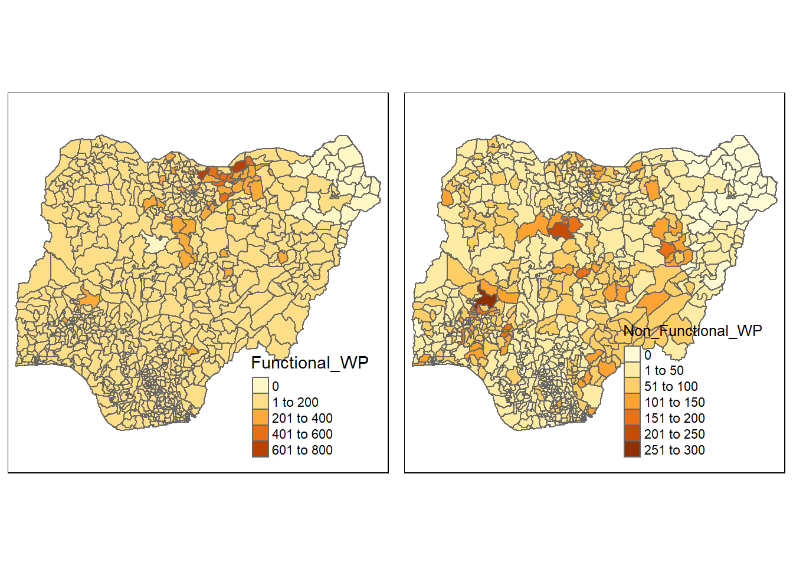

pacman::p_load(sf, spdep, tmap, tidyverse)Take-home Exercise 1: Geospatial Analytics for Social Good
1 Overview
Water is an essential resource that not only supports life but also drives economic development. According to the World Bank, approximately 2 billion people in the world do not have safely managed drinking water services and 3.6 billion people lack safely managed sanitation services. Developing countries are most affected by the shortage of water. The lack of ground water threatens their fight against poverty, food and water security and socio-economic development.
1.1 About Water Point Data Exchange
Organisations like the World Bank, UNICEF and Water Point Data Exchange (WPdx) have various plans and schemes in place to combat this issue. In particular, WPdx has it in their mission to unlock potential of water point data to improve rural water services through evidence-based decision-making. It maintains a global data repository for data collected from rural areas at the water point or small water scheme level. A notable point is that data is formatted according to the WPdx Data Standard before being uploaded and published onto the repository. Using these information, decision support tools linked to the repository will be able to perform advanced analyses seamlessly.
References:
https://www.waterpointdata.org/about/
https://www.worldbank.org/en/topic/water/overview
https://www.unwater.org/publications/un-world-water-development-report-2022
1.2 Objectives
Geospatial analytics hold tremendous potential to address complex societal problems like water shortage. In this study, I will apply appropriate global and local measures of spatial association techniques to reveal the spatial patterns of non-functional water points.
1.3 The Study Area
The focus of this study would be Nigeria. Nigeria is located in West Africa and is the most populous country in Africa. UNICEF estimates that one third of Nigeria children do not have sufficient water to meet daily needs.
https://www.unicef.org/nigeria/press-releases/nearly-one-third-nigerian-children-do-not-have-enough-water-meet-their-daily-needs
2 Getting Started
2.1 Setting the Analytical Tools
The code chunk below installs and loads sf, spdep, tmap and tidyverse packages into R environment. pacman() is a R package management tool. It provides intuitively named functions for the base functions.
3 Data Preparation
3.1 Data
As mentioned in the earlier section, the focus of this study is Nigeria. Two data sets will be used in this study. They are:
Nigeria Level-2 Administrative Boundary (also known as Local Government Area or LGA) polygon feature GIS data. The data was obtained from geoBoundaries.
WPdx+ data set that was obtained from Water Point Data Exchange (WPdx). It consists of water point related data from rural areas at the water point or small water scheme level. The entire set of data includes countries other than Nigeria. Hence, we will be performing data pre-processing to extract the relevant data.
TipThe raw WPdx+ data file is 427mb and exceeds the upload limit of Github. In the next section, we will extract the relevant and necessary information, extract it into a .rds file and use the file for subsequent analysis. The raw file will not be pushed to Github to avoid crashing the Github repository.
3.2 Importing the data into R Environment
The geospatial data is in ESRI shapefile format and the attribute table is in csv format.
3.2.1 Importing Geospatial data into R
The code chunk below uses st_read() function of sf package to import geoBoundaries-NGA-ADM2 shapefile into R as a polygon feature data frame. The imported shapefile will be a simple features object of sf.
nigeria <- st_read(dsn = "data\\geospatial",
layer = "geoBoundaries-NGA-ADM2")From the output, we can see that there are 774 multipolygons features with 5 fields. nigeria is in WGS 84 coordinates system. The bounding box provides the x extend and y extend of the data.
To learn more about the attribute information, we can apply glimpse() of dplyr package.
glimpse(nigeria)The printout above details the data type of each field. For instance, $ shapeName is in character data type.
3.2.2 Importing attribute data into R
The WPdx+ dataset has 70 columns and 406,566 rows.
wpdx <- read_csv("data\\aspatial\\Water_Point_Data_Exchange.csv", show_col_types = FALSE)Following the warning prompt, we can examine the imported data using the code chunk below.
problems(wpdx)The output reveals that there is a mismatched in the expected imported values and the actual imported values. It seems that R expected boolean data types but got character data types instead. Let’s find out which columns 19 and 20 are, and the data type by using glimpse() of dplyr package to view the attribute information.
glimpse(wpdx)glimpse() allows us to see all columns in the data frame which is very helpful since we have 70 columns. Columns 19 and 20 correspond to #rehab_year and #rehabilitator. We can see that they are in the lgl data type, which means that they expect logical values. We now understand that R prompted the message to warn us that the data is in the incorrect data type. We will not need to act on this warning for now as we have no use for these columns and will remove them later.
3.3 Data Wrangling
The entire dataset is large, and we need only to extract the relevant information required for the analysis. The focus of the study is Nigeria and the analysis will be done at the Level-2 Administrative Boundary (or LGA) level. Therefore, we will be performing steps to:
- Extract data belonging to Nigeria and
- Group water points according to their functional status at the LGA level.
Besides the above, we will also be performing data preparation and wrangling techniques to surface data issues and resolve them prior to the analysis. Before we start our data wrangling, it would be useful to inspect the metadata to understand what each column represents.
3.3.1 Extract data belonging to Nigeria
To learn which column(s) to use to filter for Nigeria’s data, we can inspect the metadata. We will not display the entire metadata here as it is lengthy. However, here is an excerpt of some columns:
| Column Name | Description |
|---|---|
| #clean_country_name | Cleaned version of the country name based on provided GPS coordinates. |
| #clean_adm1 | Cleaned version of the Primary Administrative Division data based on provided GPS coordinates and GADM boundaries. |
| #clean_adm2 | Cleaned version of the Secondary Administrative Division data based on provided GPS coordinates and GADM boundaries. |
| #status_id | Identify if any water is available on the day of the visit, recognizing that it may be a limited flow. |
| #status_clean | Categorized version of the #status parameter. Based on terms from the #status entry, status_clean includes 5 categories: Fully functional, Functional but needs repair, Non functional and needs repair, Non functional due to dry season, Abandoned and Other. These categories will continue to evolve and will be refined in future updates. |
| #status | Status of the physical/mechanical condition of the water point. |
Based on the above, we can use #clean_country_name to filter out rows belonging to Nigeria. This can be done using the code chunk below. The filtered data set will be saved as wpdx_nigeria. We can also inspect the first few rows of the data by using head().
wpdx_nigeria <- wpdx %>%
filter(`#clean_country_name` == "Nigeria")
head(wpdx_nigeria)Let’s use dim() to reveal the dimensions of the wpdx_nigeria.
dim(wpdx_nigeria)The print out reveals that wpdx_nigeria has 95,008 rows and 70 columns.
3.3.2 Resolving Misspellings
#clean_adm2 gives us the location of the water point at the LGA level and #status_clean provides us the status of the water point. Therefore, we will use these two variables to group our data.
Before we do that, let’s inspect the variables. Using the code chunk below, we use count() dplyr package to count the frequency of the each location and/or category.
count(wpdx_nigeria, `#clean_adm2`)From the above output for #clean_adm2, we can see that there are 753 LGA. There seems to be no duplicates or misspellings which is good.
count(wpdx_nigeria, `#status_clean`)From the output above, we observe three issues for the #status_clean column: misspellings, missing data and incorrect number of categories. Let’s tackle misspellings first.
We can easily see that there two similar categories “Non functional due to dry season” = “Non-Functional due to dry season”. One is spelled with a dash and one without. Let’s correct this by using the recode() from dplyr package.
#recode
wpdx_nigeria_clean <- wpdx_nigeria %>%
mutate(`#status_clean` = recode(`#status_clean`, "Non functional due to dry season" = "Non-Functional due to dry season"))
#re-run the frequency count
count(wpdx_nigeria_clean, `#status_clean`)From the above, we can confirm that the categories has been recoded.
Incorrect number of categories
Recall that the metadata specifies that there would be 5 categories in the #status_clean: (1) Fully functional, (2) Functional but needs repair, (3) Non functional and needs repair, (4) Non functional due to dry season, (5) Abandoned and Other. In reality, we can see that there are 7 categories.
Let’s aggregate some categories to align. We will merge:
‘Functional but not in use’ with ‘Functional’ under ‘Functional’
‘Abandoned/Decommissioned’ and ‘Abandoned’ under ‘Abandoned and Others’
#recode
wpdx_nigeria_clean <- wpdx_nigeria_clean %>%
mutate(`#status_clean` = recode(`#status_clean`,
"Functional but not in use" = "Functional",
"Abandoned/Decommissioned" = "Abandoned and Others",
"Abandoned" = "Abandoned and Others"
))
#re-run the frequency count
count(wpdx_nigeria_clean, `#status_clean`)From the above, we can confirm that the values have been recoded correctly. We now have 5 categories in the #status_clean column: (1) Functional, (2) Functional but needs repair, (3) Non functional, (4) Non functional due to dry season, (5) Abandoned and Others. This is more or less aligned with the metadata description.
3.3.3 Missing values
We also note that there are 10,656 missing values in the #status_clean column. While the amount of missing values is more than 5% of the rows, we will drop them as they are not useful in helping us in our analysis of the functional and non-functional water points.
#recode
wpdx_nigeria_clean <- wpdx_nigeria_clean %>%
drop_na(`#status_clean`)
#re-run the frequency count
count(wpdx_nigeria_clean, `#status_clean`)3.3.4 Derive new feature for analysis
In our study, we would like know functional and non-functional water points. So we will create a new column that states whether the water point if functional or not. For our analysis, we will recode some values e.g., ‘Functional but needs repair’ to be under ‘Functional’ and ‘Abandoned and Others’ to ‘Non-Functional’ as well.
#recode
wpdx_nigeria_clean <- wpdx_nigeria_clean %>%
mutate(`Functional_Status` = `#status_clean`) %>%
mutate(`Functional_Status` = recode(`Functional_Status`,
"Functional but needs repair" = "Functional",
"Non-Functional due to dry season" = "Non-Functional",
"Abandoned and Others" = "Non-Functional"))
#re-run the frequency count
count(wpdx_nigeria_clean, `Functional_Status`)3.3.5 Rename Columns
Let us rename #clean_adm2 to LGA.
wpdx_nigeria_clean <- wpdx_nigeria_clean %>%
rename(`LGA` = `#clean_adm2`)3.3.6 Drop Unwanted Columns
wpdx_nigeria_simple <- subset(wpdx_nigeria_clean ,
select = c("LGA", "#lat_deg",
"#lon_deg","#water_source_clean",
"#water_source_category",
"#distance_to_primary_road",
"#distance_to_secondary_road", "#distance_to_tertiary_road",
"#distance_to_city", "#distance_to_town",
"water_point_population", "local_population_1km",
"crucialness_score", "pressure_score", "usage_capacity",
"is_urban", "cluster_size", "Functional_Status")
)3.3.7 Creating a simple feature data frame
Next, we will create a simple feature data frame from wpdx_nigeria_clean. This is done using the code chunk below.
wpdx_nigeria_sf <- st_as_sf(wpdx_nigeria_simple,
coords = c("#lon_deg","#lat_deg"),
crs=4326) %>%
st_transform(crs = 26391)We can examine the content of this newly created simple feature data frame using the following code chunk.
glimpse(wpdx_nigeria_sf)Notice that a new column called geometry has been added and the original #lon_deg and #lat_deg columns have been removed.
3.3.8 Transforming the CRS
We will transform nigeria from geographic coordinate system to projected coordinate system. We need to do this transformation because the geographic coordinate system is inappropriate if the analysis require the use of distance and/or area measurements.
For the nigeria simple feature data frame, the output of the code chunk below tells us that it is in the wgs84 coordinate system.
st_geometry(nigeria)There are three Projected Coordinate Systems of Nigeria: EPSG: 26391, 26392, and 26303. For this study, we will be EPSG 26391. We can use the st_transform() of the sf package to reproject nigeria from one coordinate system to another coordinate system mathematically.
nigeria26391 <- st_transform(nigeria,
crs = 26391)Next, let us display the content of nigeria26391 sf data frame as shown below.
st_geometry(nigeria26391)Notice that it is in projected coordinate system now. Furthermore, if you refer to Bounding box:, the values are greater than 0-360 range of decimal degree commonly used by most of the geographic coordinate systems.
Let us also rename shapeName to LGA.
nigeria26391 <- nigeria26391 %>%
rename(`LGA` = `shapeName`)3.3.9
3.4 Export to .rds
Next, let’s save our clean files into .rds files. This would enable us to shorten the loading time and we can avoid uploading the large raw files onto GitHub.
The code chunk below creates two new .rds file, one for the spatial and attribute file.
write_rds(wpdx_nigeria_sf, "data\\rds\\wpdx_nigeria_sf_clean.rds")
write_rds(nigeria26391, "data\\rds\\nigeria_26391_clean.rds")3.5 Point in Polygon Count
functional <- wpdx_nigeria_sf %>%
filter(`Functional_Status` == 'Functional')
non_functional <- wpdx_nigeria_sf %>%
filter(`Functional_Status` == 'Non-Functional')Next, we can count the number of water points in each LGA using the following code chunk. Two operations are happening at the same time. First, the code chunk identifies water points located inside each LGA by using st_intersects(). Next, length() of Base R is used to calculate the number of water points that fall inside each LGA.
nigeria26391$Functional_WP <- lengths(st_intersects(nigeria26391, functional))
nigeria26391$Non_Functional_WP <- lengths(st_intersects(nigeria26391, non_functional))tmap_mode("plot")tmap mode set to plottingf <- qtm(nigeria26391,
fill = "Functional_WP")
nf <- qtm(nigeria26391,
fill = "Non_Functional_WP")
tmap_arrange(f, nf, asp = 1, ncol = 2)
4
----
4.0.1 Group water points according to their functional status at the LGA level
Next, we will group the water points at the LGA level and according to their functional status.
# wpdx_nigeria_group <- wpdx_nigeria_clean %>%
# group_by(`#clean_adm2`, `#status_clean`) %>%
# summarise(water_points = n()) %>%
# ungroup() We will use pivot_wider() from tidyr package. This is used to pivot row values to columns. It “widens” data, increasing the number of columns and decreasing the number of rows
# wpdx_nigeria_group <- wpdx_nigeria_group %>%
# pivot_wider(names_from = `#status_clean`, values_from = `water_points`)Finally, we can do a check using glimpse().
# glimpse(wpdx_nigeria_clean)Our dataset has one column that specifies the LGA and the remaining six columns specifies the number of water points by its functional statuses.